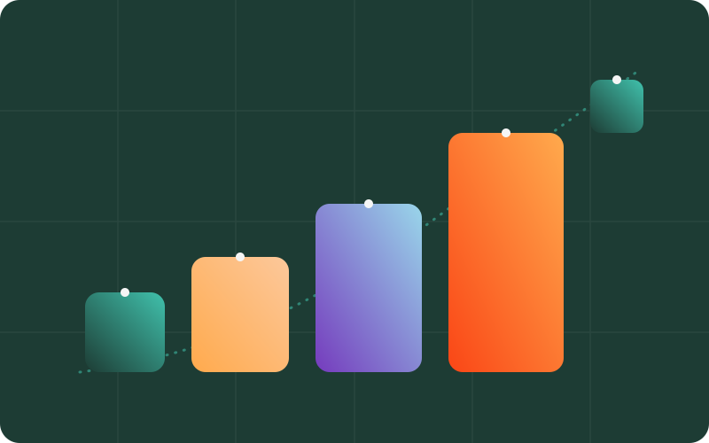

Your personal brand is the seedbed for business growth. Start planting it early. Nurture it wisely. Let it scale alongside your business.
Founder-led content significantly influences purchase decisions (e.g. 54% of decision-makers say they purchase from companies whose leaders produce thought leadership)B2B Thought Leadership Impact Study · LinkedIn 2023
As a founder, you are your company's earliest and strongest signal to the market. Long before your product reaches maturity, your personal brand is already shaping how customers, investors, and future employees perceive your business. Yet too many founders treat personal branding as an afterthought, waiting until "the company is bigger."
But the reality is clear:

A personal brand can't thrive in rented spaces alone. Social platforms are valuable, but they're algorithms you can't control. That's why we believe in helping founders build their own Digital Garden: an online engagement platform designed to house your ideas, your expertise, and your unique story.
Think of it as your home base for:
Founder-led marketing can improve brand credibility and shorten sales cycles in high-trust industries.The Role of the CEO in B2B Marketing · Gartner (2021)
This is how you ensure your personal brand lives beyond fleeting social media trends, and becomes a long-term moat for your business.
Research shows founder visibility isn't just nice to have. It's a measurable driver of business growth:
The biggest mistake founders make? Waiting for the "right time" to start building their personal brand. But personal brands grow like gardens, they require time, consistent care, and space to flourish.
If you wait until your company is "big enough," you miss the compound effects that early investment brings:
At MarketGrowth, we help founders turn personal branding from an overwhelming concept into a clear, actionable system. Our Digital Engagement Platform empowers you to:
Choose how you want to build an audience, either with open-source or third-party SaaS. For open-source solutions, choose the Starter or Growth plan below that's packed with the best features including managed hosting, courses, group discussions, event calendar, gated downloads, blog posts, and more. All plans include all features, so you can start small and scale as you grow.
We start with a discovery call to understand your goals, audience, and existing stack. From there we scope the platform, design the experience, and handle the build, launch, and post-launch support, keeping you involved at every milestone.
The Growth plan is our done-for-you tier: branding is included, we customize a proven template for you, set up e-mail and social authentication, cover plugin licensing, wire up GA4/GTM analytics, and provide a custom dashboard, quarterly workshops, and two hours of post-launch support per month.
Brand application is included in the Growth and Scale plans, we apply your fonts, colors, and visual language across the platform. Creating a brand identity from scratch is a separate engagement we can scope with you.
Absolutely. Bring your brand guidelines and we'll implement them faithfully across your microsite or community platform.
It comes down to ownership, budget, and speed. Open-source (like WordPress-based OpenCMX) gives you full ownership and flexibility at a lower recurring cost. Third-party SaaS gets you launched faster with less maintenance. We'll help you weigh the trade-offs on a discovery call.
Yes, book a free consult and we can walk you through live examples and set up a sandbox so you can evaluate the experience before committing.
No. Everything we build on open-source is yours: your domain, your hosting, your data, your code. If we ever part ways, you keep the entire platform.
Yes, see ForwardGTM (forwardgtm.com), a content hub we built for Pegasus Strategy, and Orbytt (orbytt.ai), a talent discovery platform with courses, forums, groups, and events.
You should choose us if you're looking for a partner, not just a provider. Most agencies do the job. We focus on outcomes, like more brand engagement, efficient AI automation, or better customer experience, whatever moves the needle for your business.
We don't lock you into a cookie-cutter process. We come in, understand your challenges deeply, and build solutions that actually fit. And we stay accountable, from strategy to execution to results.